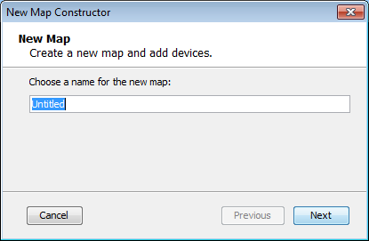
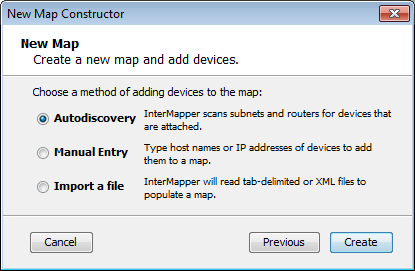

When you launch InterMapper, a Map List window appears. It contains several demo maps, which show examples of network maps, and contains brief descriptions of the elements appearing on the maps. Double-click a map to open it.
After you have explored the demo maps, you are ready to use the Auto-discover function to create your first map.
To create a new map, choose New Map... from the File Menu. The New Map Constructor window appears:

Enter a map name, and click Next >.The second page of the New Map Constructor appears.

For information on using the Auto-discover function, see Using Auto-discover.
You can also create a map by importing data in a text file. For more information, see Importing Data Into Maps.
InterMapper places a label on each device it finds. By default, it uses the device's full DNS name. Networks are labeled with both an IP address and the number of bits in the subnet mask (indicating the network range). For example, the network labeled 192.168.1.0/24 indicates that the IP devices are in subnet 192.168.1.0, with a subnet mask of 24 bits (255.255.255.0).
Note: You can change the label that appears for each device using the Label... command, available from the Format menu.